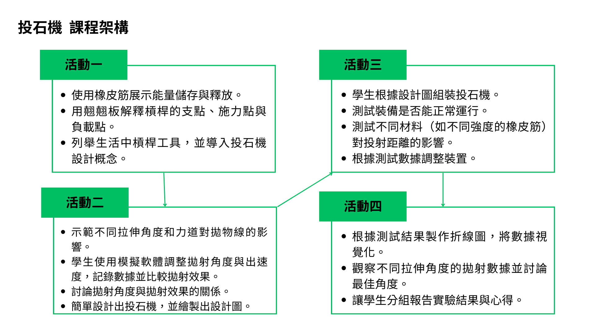

核心概念
彈性位能釋放、動能轉換、槓桿的支點／施力點／負載點，以及投射角度與距離的關係。
國小科技教育 × 資訊教育
從生活中的投石車出發，讓學生觀察彈性位能與槓桿作用，經歷電腦模擬、設計、製作、測試與數據分析，完成一件能說明原理、能被驗證的科技作品。
學習成果：投石機作品、實驗紀錄、數據圖表、設計圖與小組報告。
課程定位
本課程以投石機為共同情境，讓學生在自然科學與資訊科技的交會處理解原理、做出作品，並以資料說明自己的設計選擇。
彈性位能釋放、動能轉換、槓桿的支點／施力點／負載點，以及投射角度與距離的關係。
能說明科技產品用途與運作方式，繪製設計構想，安全使用工具與材料，並以運算思維分析測試結果。
完成投石機、設計圖、電腦與實作實驗紀錄、折線圖，以及小組口頭報告與同儕互評。

教學流程
每個活動都保留明確的學習目標、操作任務與可觀察的產出，方便教師說明課程如何逐步累積。
用橡皮筋與翹翹板說明能量儲存、釋放，以及支點、施力點與負載點。
在電腦模擬中調整角度與初速度，記錄拋射結果，形成投石機的設計假設。
依據設計圖組裝作品，測試不同材料與拉伸角度，記錄作品能否穩定運作。
把測試結果製作成折線圖，比較不同條件，並以小組報告分享觀察與結論。
單元設計
課程配置將自然科學的原理理解與資訊科技的資料處理分開聚焦，再於實作與報告中整合。
| 活動 | 節數 | 主要任務 | 學習產出 |
|---|---|---|---|
| 活動一／能量的魔法 | 1 節 | 觀察彈性物品，理解彈性位能與槓桿三要素。 | 口頭說明、生活工具舉例 |
| 活動二／虛擬實驗室 | 1 節 | 模擬不同投射角度與初速度，討論拋射效果。 | 模擬紀錄表、投石機設計圖 |
| 活動三／動手造投石機 | 2 節 | 依設計圖組裝並測試不同材料與拉伸角度。 | 投石機作品、實驗記錄表 |
| 活動四／數據探索者 | 1 節 | 將測試資料圖表化，分析關係並報告實驗心得。 | 折線圖、數據檢核表、口頭報告 |
教案內容
以下內容整理自教案原稿，保留活動時間、學習目標、活動步驟、評量方式與教師提醒。
評量觀察：學生能否清楚描述投石機的功能與運作原理，並連結生活經驗。
評量觀察：檢查模擬紀錄是否包含不同設定與結果，並觀察設計圖是否回應測試發現。
評量觀察：觀察工具使用安全、作品是否依構想完成，以及學生能否以記錄支持調整。
評量觀察：檢核圖表正確性、數據解釋與小組合作表現。
教具融入
投石車教具不是單純的操作玩具，而是學生辨識「儲能、釋放、投射」三個機構步驟的共同觀察對象。
辨識零件
找出投石臂、支點、承載位置與彈性位能來源。
說明連動
用箭頭或口語描述能量如何從儲存走向投射。
完成測試
以實際作品驗證角度、材料與結構調整。
材料與安全
組裝影片
原教案附有三支影片連結，可在課堂中作為組裝順序、機構連動與作品說明的觀摩素材。
評量規準
評量不只看最後作品，也同時觀察概念說明、設計圖、操作安全、資料處理與合作表現。
能說明投石機用途、彈性位能釋放與槓桿作用，並連結生活中的工具。
工具：引導式問答、口頭報告設計圖能清楚呈現投石機造形、主要部件與預期的運作方式。
工具：設計圖稿能依據構想完成組裝，正確使用材料與工具，並維持測試安全。
工具：教師觀察、作品檢查能記錄拋射數據、製作圖表，並解釋拉伸角度與距離的關係。
工具：數據表格檢核表、電腦圖表能在小組中分工、討論測試結果，依據證據提出調整方向。
工具：同儕互評表、小組合作記錄學習單
以下保留盤點到的原始學習單與教案檔案，教師可依活動需求開啟、下載或列印使用。